第四单元
新民主主义革命的开始
面对北洋军阀统治下混乱的政治局面，一部分先进知识分子认为必须进行文化变革才能挽救民族危亡。他们发起新文化运动，推动了思想的解放。
1919年，中国在巴黎和会上的外交失败，引发
了一场彻底反帝反封建的爱国革命运动—五四运
动。工人阶级展现了强大力量，马克思主义广为传播，共产党早期组织相继成立。1921年7月，中国共产党诞生，中国革命的面貌焕然一新。
第 12 课
新文化运动
教材第 56 页 · PDF 第 61 页查看原书页面
从1915年开始，一场新文化运动在中华大地上应运而生。这场运动是如何发生的？它的主要内容和意义是什么？
新文化运动的兴起
新生的中华民国很快陷入政治混乱的局面之中。一部分先进知识分子经过痛苦的反思认识到：仅有政治制度的革新不足以救中国，必须启发国民新的伦理道德意识，培养国民的独立人格，彻底荡涤封建旧文化的毒害，进行一场思想文化领域的革新运动。
1915 年，陈独秀在上海创办《青年杂志》①，并在创刊号上发表《敬告青年》一文，正式吹响了新文化运动的号角。1917 年初，陈独秀接受新任北京大学校长蔡元培的聘请，出任北京大学文科学长。《新青年》杂志社不久也迁往北京。当时《新青年》的主要撰稿人有胡适、李大钊、鲁迅等，
《青年杂志》封面① 《青年杂志》从第二卷起改名为《新青年》。《新青年》深受广大知识分子欢迎，至1917年，单期最高发行量已有1.6万多份。
教材第 57 页 · PDF 第 62 页查看原书页面
大多任教于北京大学。他们热情宣传西方的民主与科学思想，猛烈抨击封建的旧道德和旧文化。《新青年》和北京大学成为新文化运动最为重要的阵地。
蔡元培，浙江绍兴人，中国近代著名民主革命家和教育家。蔡元培在1916年出任北京大学校长之后，着力营造“兼容并包”和“思想自由”的学术研究氛围，聘请了一大批具有新思想的学者到北京大学任教，使得北京大学不仅成为人才鼎盛、学术兴旺的全国最高学府，也成为中国新文化运动的大本营。
人物扫描
新文化运动提倡男女平等、个性解放。大学是否应该开放女禁，成为当时社会普遍关注的问题。蔡元培、胡适等人都赞成大学开放女禁，很多女性也积极争取接受高等教育的权利。1920年春，北京大学首次招收9名女生入学旁听，开创了中国国立大学男女同校的先例。
相关史事
新文化运动的内容与意义
新文化运动抨击旧道德和旧文化。针对北洋政府统治时期猖獗一时的尊孔复古逆流，《新青年》发表了大量文章，猛烈抨击封建的旧道德和旧文化。鲁迅的白话小说《狂人日记》，以新文学的形式深刻揭露了封建礼教的吃人本质，号召人民起来推翻“黑漆漆的”吃人社会。
新文化运动提倡民主与科学。民主与科学是新文化运动所标举的两大口号，由陈独秀首先提出。他还将它们形象地称为“德先生”和“赛先生”①。陈独秀认定：“只有这两位先生，可以救治中国政治上道德上学术上思想上一切的黑暗。”
① “德先生”和“赛先生”的说法，是由“民主”和“科学”两个英文名词词头的译音而来。德先生即democracy，赛先生即science。
教材第 58 页 · PDF 第 63 页查看原书页面
文学革命是新文化运动的重要组成部分。1917 年，胡适在《新青年》发表《文学改良刍议》一文， 主张以白话文作为新文学的语言，强调写文章“须言之有物”“不摹仿古人” “不作无病之呻吟”。陈独秀紧接着发表《文学革命论》一文，主张推倒陈腐、雕琢、艰涩的旧文学，建设新鲜、平易、通俗的新文学。经过新文化运动的倡导，白话文逐渐普及开来。
新文化运动动摇了封建道德礼教的统治地位，使中国人民接受了一次民主与科学的洗礼，为随后爆发的五四运动起了思想宣传和铺垫的作用。尽管新文化运动对于中国传统文化的看法带有一定的片面性，但它打开了遏制新思想涌流的闸门，掀起了一股思想解放的潮流。
知识拓展
新文化运动时期提倡白话文
过去我们的书面语采用文言文，比较难懂，阅读与书写成了少数读书人的专利。近代以来，要求简化文体、使用口语化的白话文的呼声越来越高，出现了一些宣传白话文的报纸，如《无锡白话报》等。官方告示也有采用白话文的，但总的来说，白话文不是很普及。
新文化运动时，在胡适、鲁迅等人的倡导下，白话文逐渐普及开来。鲁迅的第一篇白话小说《狂人日记》、胡适的第一部白话诗集《尝试集》，在当时都产生了很大影响。1920年，北洋政府下令在全国学校使用白话文。
课后活动
在中国近代化进程中，不同阶级、阶层的代表人物先后提出了自强求富、君主立宪、民主共和、民主与科学等口号和主张，体现了时代的变化和发展。结合本课内容，请你谈谈民主与科学口号的进步意义。
第 13 课
五四运动
教材第 59 页 · PDF 第 64 页查看原书页面
第一次世界大战期间，欧洲列强无暇东顾，日本乘机加紧对中国的侵略，严重损害了中国的主权。中国人民的反日情绪日渐增长。1919年巴黎和会上中国外交的失败，引发了伟大的五四运动。这场运动究竟是怎样发生发展的？有哪些深远意义？
五四运动的爆发
第一次世界大战结束后，英、美、法、日等战胜国于1919 年1 月至6 月在法国巴黎召开所谓的“和平会议”。作为战胜国之一的中国政府也派代表参加了会议。中国代表在会议上提出废除外国在华特权、取消“二十一条”、收回青岛主权等正当要求。然而，英、法、美等列强操纵了会议，对中国的要求置若罔闻，竟然将德国在中国山东的特权全部转让给日本。
消息传到国内，长期积压在中国人民心头的怒火，终于像火山一样爆发了！
教材第 60 页 · PDF 第 65 页查看原书页面
① 曹汝霖是订立“二十一条”时的外交次长，当时任交通总长。陆宗舆是订立“二十一条”时的驻日公使，当时任币制局总裁。章宗祥是山东问题换文的签字者，当时任驻日公使。
1919 年5 月4 日，北京3 000 多名学生汇集在天安门前，发表宣言，揭露帝国主义列强的侵略行径，并举行示威游行。学生们提出“外争主权，内除国贼”“誓死力争，还我青岛”“取消二十一条”“拒绝在和约上签字”等口号，要求严惩亲日派卖国贼曹汝霖、陆宗舆、章宗祥①。北洋政府出动军警镇压，逮捕了30 多名爱国学生。第二天，北京学生举行总罢课。
材料研读
务望全国工商各界，一律起来设法开国民大会，外争主权，内除国贼。中国存亡，就在此一举了！今与全国同胞立两个信条道：中国的土地可以征服而不可以断送！中国的人民可以杀戮而不可以低头！国亡了！同胞起来呀！—《北京学界全体宣言》
上面这段话最能反映五四运动怎样的性质？为什么？
1919年5月3日晚，北京大学及北京各校学生代表上千人在北大法科礼堂集会，由《京报》主笔邵飘萍报告巴黎和会上中国外交的失败情况，群情激愤。北大一位同学当场咬破中指，撕断衣襟，血书“还我青岛”四个大字，全体学生更加激愤。第二天，五四运动爆发了。
相关史事
教材第 61 页 · PDF 第 66 页查看原书页面
五四运动的扩大
北京学生的爱国斗争得到社会各阶层人士的广泛拥护。陈独秀亲自起草《北京市民宣言》，号召北京学生、商人、劳工奋起斗争，勇敢地对社会进行根本改造。
面对中国人民的正义抗争，日本帝国主义在天津、上海、南京、汉口等地集结军舰，胁迫北洋政府取缔学生的爱国运动。这种挑衅行为进一步激起了中国人民的反日怒潮。全国200 多个城市的学生一致罢课，支持北京学生的反帝爱国斗争。
6 月3 日，北京学生再次走上街头，开展大规模的爱国宣传活动，遭到军警镇压，先后有800 多名学生被捕。消息传出，6 月5 日，上海工人罢工，商人罢市。罢市风潮随即席卷全国十几个商业中心城市。唐山、长辛店等地工人也举行罢工，声援学生的爱国斗争。工人阶级成为五四运动的主力，运动的中心也由北京转移到了上海。
在举国上下汹涌澎湃的反帝浪潮之下，北洋政府不得不释放被捕的学生， 罢免曹汝霖等人的职务，中国代表也没有在“巴黎和约”上签字。五四运动的直接目标得到了实现，这是中国人民反帝斗争的一次重大胜利。
五四运动的历史意义
五四运动是一场以先进青年知识分子为先锋、广大人民群众参加的彻底反帝反封建的伟大爱国革命运动，是一场中国人民为拯救民族危亡、捍卫民族尊严、凝聚民族力量而掀起的伟大社会革命运动，是一场传播新思想新文化新知识的伟大思想启蒙运动。
五四运动以彻底反帝反封建的革命性、追求救国强国真理的进步性、各族各界群众积极参与的广泛性，推动了中国社会进步，促进了马克思主义在中国的传播，促进了马克思主义同中国工人运动的结合，为中国共产党成立做了思想上干部上的准备，为新的革命力量、革命文化、革命斗争登上历史舞台创造
教材第 62 页 · PDF 第 67 页查看原书页面
了条件，是中国旧民主主义革命走向新民主主义革命①的转折点，在近代以来中华民族追求民族独立和发展进步的历史进程中具有里程碑意义。
知识拓展
全国学联在五四运动中诞生
1919年5月4日北京学生爱国游行之后，为了更好地组织爱国救亡运动，5月5日，北京各校学生代表在北京大学法科礼堂召开会议，决定成立联合会。第二天，北京中等以上学校学生联合会正式宣告成立，会址设在马神庙北京大学二院。5月9日，上海各校代表在复旦大学集会，决定成立上海学生联合会，并于11日在寰球中国学生会召开成立大会。6月16日，来自全国各地的60多名学生代表在上海大东旅社召开了第一次全国学生代表大会，正式宣告成立“中华民国学生联合会”。学联大会致电北京政府，要求誓死拒约，还电告参加巴黎和会的中国代表：“如或违背民意……当与曹、章、陆同论！”
课后活动
1．以下对五四运动与辛亥革命相同之处的讨论，正确的是 （ ）
Ａ. 都经过长期的准备Ｂ. 一些初步接受了马克思主义的知识分子和青年学生在运动中起到了重要作用Ｃ. 都具有反对帝国主义和反对封建主义的性质Ｄ. 中国工人阶级登上了历史舞台
2．假如你是五四运动中的一名学生，为抗议北洋军阀的卖国政策和日本的侵略行径，请你拟写一张进行爱国宣传的传单。
① 新民主主义革命，是无产阶级领导的，人民大众的，反对帝国主义、封建主义、官僚资本主义的革命。从1919年五四运动到1949年中华人民共和国成立，被称为新民主主义革命时期。在此之前的反帝反封建的民族民主运动时期，被称为旧民主主义革命时期。
第 14 课
中国共产党诞生
教材第 63 页 · PDF 第 68 页查看原书页面
五四运动之后，随着马克思主义的广泛传播，一些地方相继建立共产党的早期组织。1921年7月，中国共产党第一次全国代表大会在上海召开，宣告了中国共产党的诞生。中国共产党是在怎样的历史条件下诞生的？它诞生之后，中国革命又出现了哪些崭新的面貌呢？
马克思主义的传播
五四运动之前，在中国知道马克思主义的人很少。1917 年俄国十月社会主义革命的胜利，使中国先进知识分子看到了曙光。经过五四运动，宣传新思想、新文化的刊物如雨后春笋般大量涌现，越来越多的先进知识分子开始关注马克思主义。1919 年，《新青年》出版“马克思研究专号”，刊载了李大钊的文章《我的马克思主义观》，对马克
李大钊，直隶乐亭人，中国马克思主义思想传播的先驱。早年在日本留学期间就开始研究社会主义思潮。1918年，他接连发表《法俄革命之比较观》《庶民的胜利》《布尔什维主义的胜利》等文章，热情讴歌俄国十月革命。李大钊盛赞十月革命“是世界革命的新纪元，是人类觉醒的新纪元”，热烈欢呼“将来的环球，必是赤旗的世界”。李大钊在中华大地上，第一次高高举起了马克思主义的旗帜。
教材第 64 页 · PDF 第 69 页查看原书页面
① 共产国际，全世界共产党和共产主义组织的国际联合组织，1919年3月在列宁的领导下成立，总部设在莫斯科。
思主义作了较为系统的介绍。随后，全国各地建立了许多研究和宣传马克思主义的团体。
五四运动的胜利发展，使中国先进的知识分子认识到工人阶级的伟大力量。不少知识分子开始走向工人群众。他们帮助工人组织工会，开办劳动补习学校和工人识字班，出版反映工人生活的刊物，用通俗易懂的语言向工人宣传马克思主义，启发工人的阶级觉悟。马克思主义开始与中国工人运动结合起来。
中国共产党的成立
1920 年夏，在共产国际①的帮助下，陈独秀在上海建立了中国第一个共产党早期组织。接着，北京、长沙、武昌等地也先后建立了共产党早期组织。
教材第 65 页 · PDF 第 70 页查看原书页面
1921 年7 月23 日，中国共产党第一次全国代表大会在上海开幕。参加大会的有毛泽东、董必武、李达等13 位代表，代表全国50 多个党员。共产国际代表马林②等出席了会议。
材料研读
以往搞革命的人，眼睛总是看着上层的军官、政客、议员，以为这些人掌握着权力，千方百计运动这些人来赞助革命。如今在五四群众运动的对比下，上层的社会力量显得何等的微不足道。在人民群众中所蕴藏的力量一旦得到解放，那才真正是惊天动地、无坚不摧的。—《吴玉章①回忆录》
上面的材料说明了什么问题？
① 吴玉章（1878—1966），四川荣县人，早年加入同盟会，五四时期开始接受和传播马克思主义思想，1925年加入中国共产党。② 马林（1883—1942），荷兰人，1921—1923年任共产国际驻中国代表。
中国共产党第一次全国代表大会在上海秘密召开期间，因受到法租界巡捕的干扰，后转移到浙江嘉兴南湖的一艘游船上，以游客泛舟为掩护，继续进行，最终完成会议议程。上海党的一大会址，嘉兴南湖红船，是中国共产党梦想起航的地方。中国共产党的建立，充分展现了开天辟地、敢为人先的首创精神，坚定理想、百折不挠的奋斗精神，立党为公、忠诚为民的奉献精神。红船精神就是其重要体现。
相关史事
教材第 66 页 · PDF 第 71 页查看原书页面
党的一大确定党的名称为“中国共产党”。大会通过了中国共产党第一个纲领，明确党的奋斗目标是推翻资产阶级政权，建立无产阶级专政，实现共产主义。大会确定党的中心工作是领导和组织工人运动，成立了党的中央领导机构中央局，陈独秀当选为中央局书记。这样，中国无产阶级
的先锋队—中国共产党诞生了！
中国共产党的诞生，是中国历史上开天辟地的大事变。自从有了中国共产党，中国革命的面貌就焕然一新了。中国共产党的诞生不是偶然的，是适应近代以来中国社会进步和革命发展的客观需要，是近代历史选择的必然结果。
1922 年7 月，中国共产党在上海召开第二次全国代表大会。大会重申了党的最终奋斗目标是实现共产主义，同时制定了党的最低纲领。纲领规定，在民主革命阶段，党的主要任务是打倒军阀，推翻帝国主义的压迫，将中国统一为真正的民主共和国。这样，中国共产党就在中国历史上第一次提出了明确的反帝反封建的民主革命纲领。
全国工人运动的高涨
中国共产党成立之后，设立了中国劳动组合书记部，集中领导全国的工人运动。在党的组织和推动下，从1922 年初到1923 年春，全国掀起了第一次工人运动的高潮，共举行大小罢工100 多次，参加人数达30 万以上。
1923 年2 月，京汉铁路工人举行大罢工。罢工工人成立京汉铁路总工会，号召工人“为自由而战，为人权而战”，将第一次全国工人运动高潮推向了顶峰。罢工遭到帝国主义和直系军阀吴佩孚的血腥镇压。此后，全国工人运动暂时转入低潮。
教材第 67 页 · PDF 第 72 页查看原书页面
京汉铁路工人罢工失败后，中国共产党认识到，单枪匹马不能取得革命的胜利，必须团结一切可能的同盟者，才能战胜强大的敌人。
1923年2月7日，吴佩孚调动军队镇压京汉铁路罢工工人，制造了血腥的“二七惨案”。京汉铁路总工会汉口江岸分会工人领袖、共产党员林祥谦被捕。刽子手把他绑在电线杆上，逼他下复工命令，遭到林祥谦严词拒绝。刽子手先砍一刀，怒声喝道：“到底下不下上工命令？”林祥谦忍痛疾呼：“我们的头可断，工不可上的！”最后，林祥谦英勇就义。
相关史事
课后活动
1．填充表格。
教材第 68 页 · PDF 第 73 页查看原书页面
知识拓展
中国共产党领导的早期农民运动
中国共产党成立之后，在集中力量领导工人运动的同时，也开始组织农民协会，领导农民运动。1921年9月，经过沈定一等共产党人的努力，浙江萧山县衙前村成立了中国第一个农民协会，领导农民开展减租、反抗地主压迫等斗争。1922年7月，共产党人彭湃在他的家乡广东海丰县赤山约领导成立了农会。1923年元旦，彭湃又领导建立了海丰总农会，海丰全县的农民运动蓬勃开展起来。
2．阅读材料，回答问题。一百年前，中国共产党的先驱们创建了中国共产党，形成了坚持真理、坚守理想，践行初心、担当使命，不怕牺牲、英勇斗争，对党忠诚、不负人民的伟大建党精神，这是中国共产党的精神之源。—习近平《在庆祝中国共产党成立100周年大会上的讲话》（2021年7月1日）
观看习近平总书记在庆祝中国共产党成立100周年大会上的讲话视频，谈谈你怎么理解“伟大建党精神”。
3．中国共产党的成立使中国革命的面貌发生了怎样的变化？
SOURCE PAGES
原书页面与插图
按单元导语和各课分组，点击页面可查看大图。
单元导语
返回正文 ↑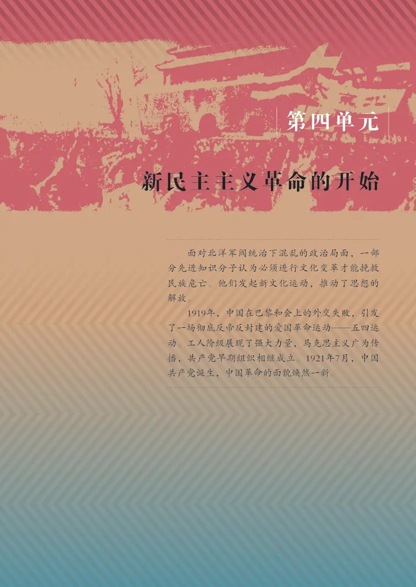
第12课 新文化运动
返回正文 ↑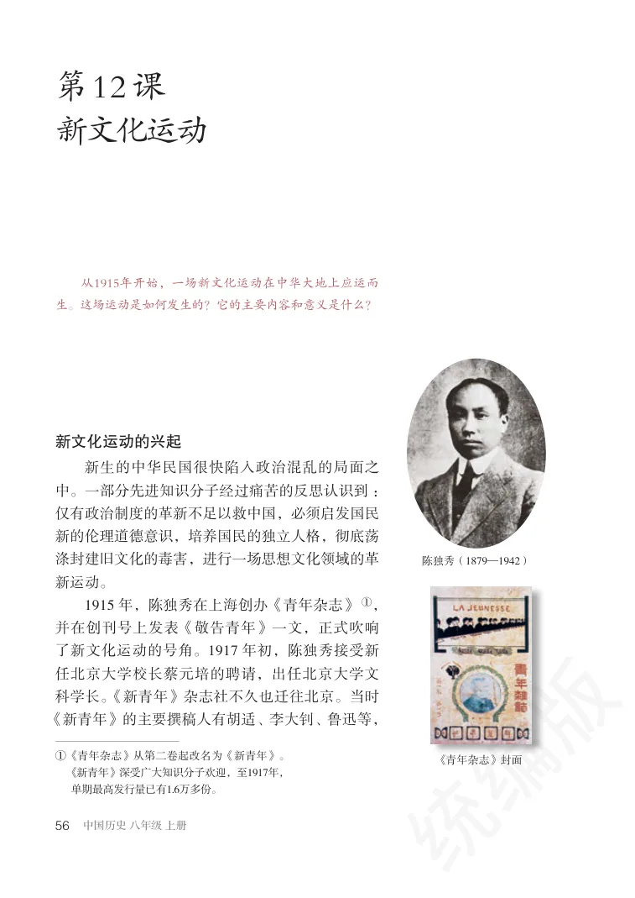
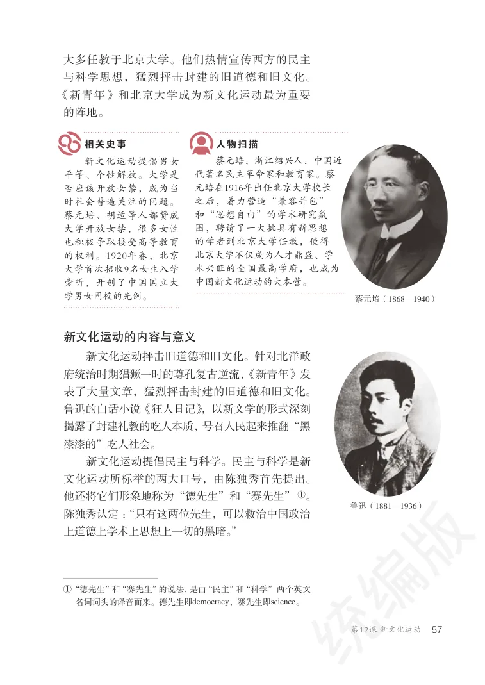
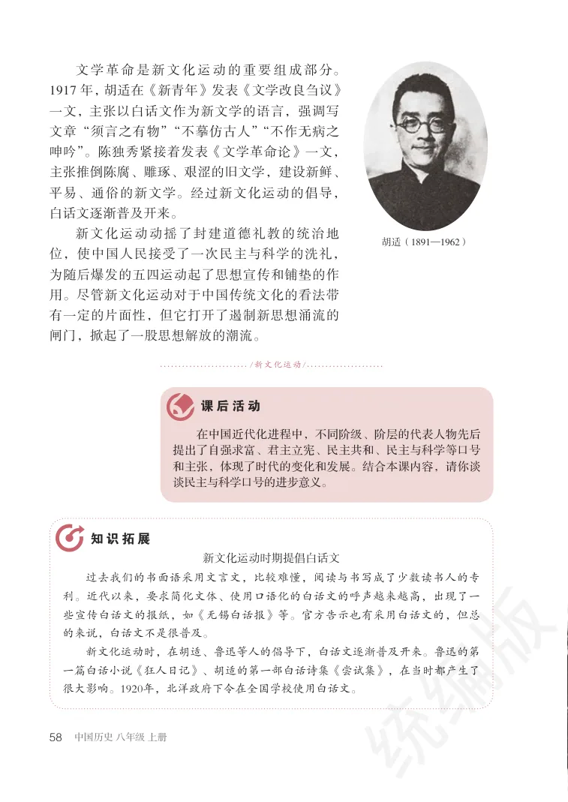
第13课 五四运动
返回正文 ↑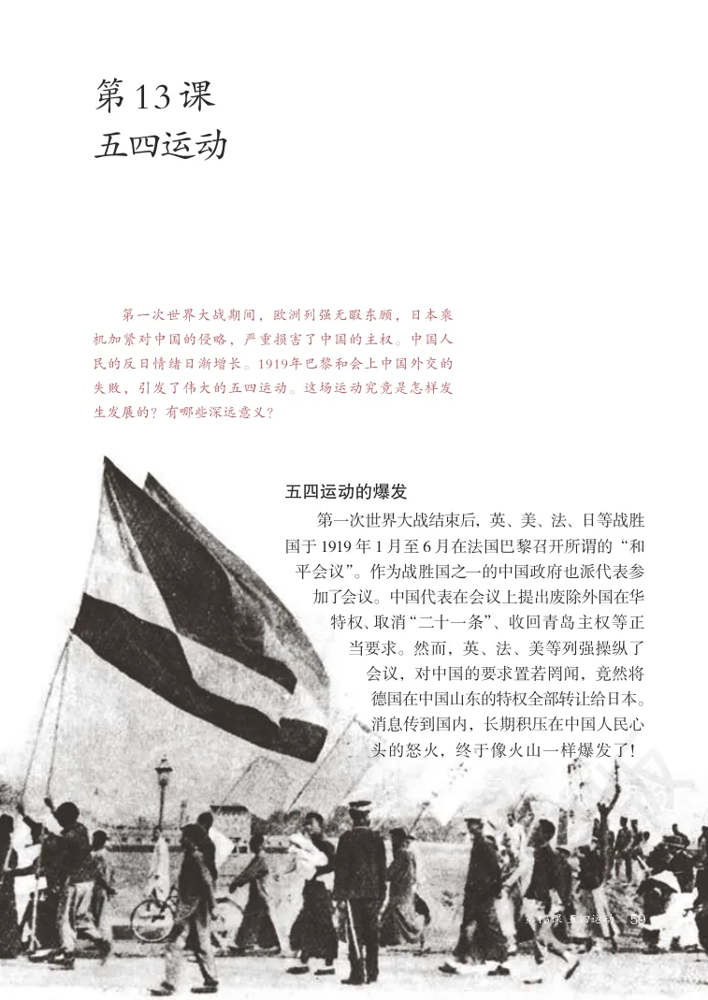
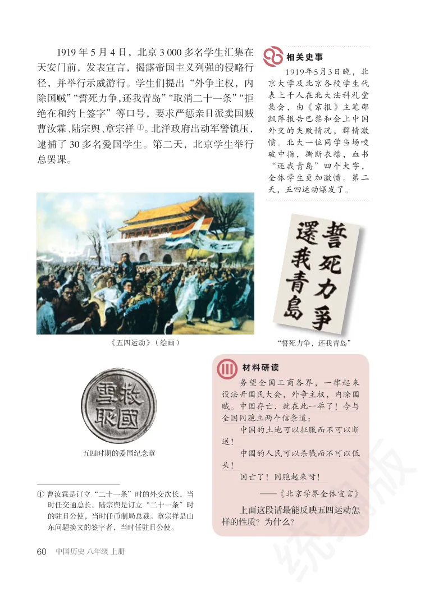
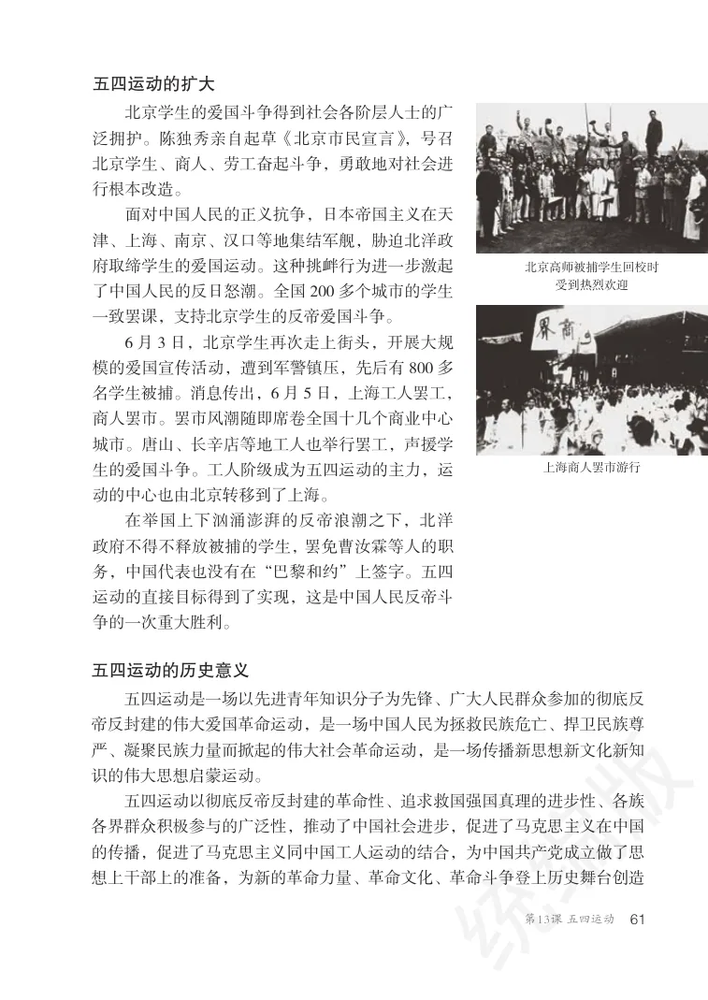
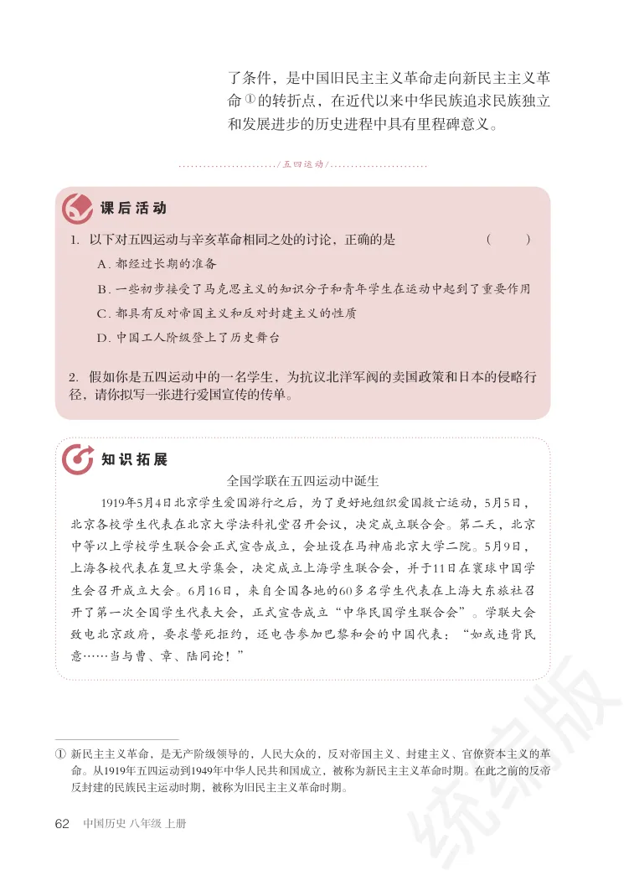
第14课 中国共产党诞生
返回正文 ↑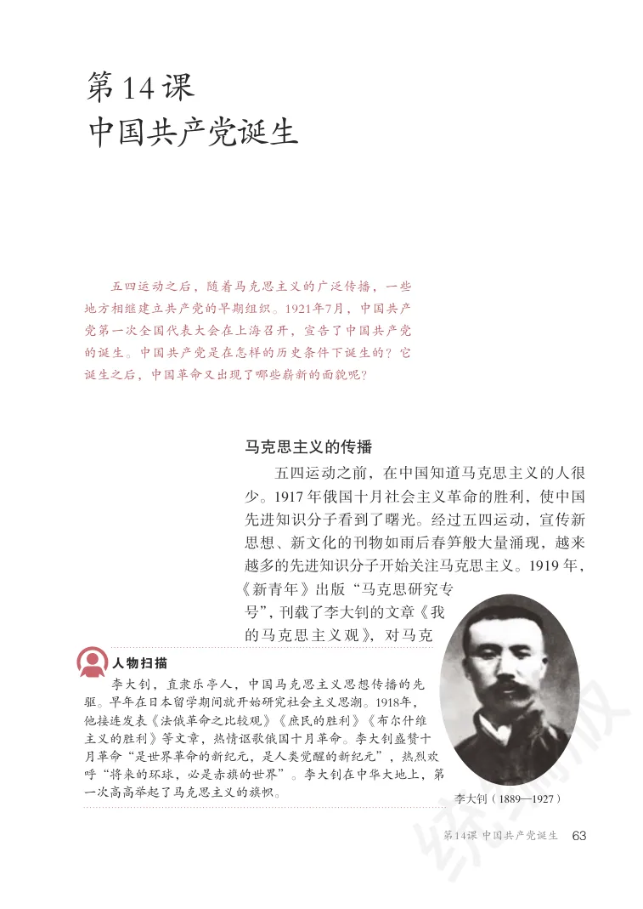
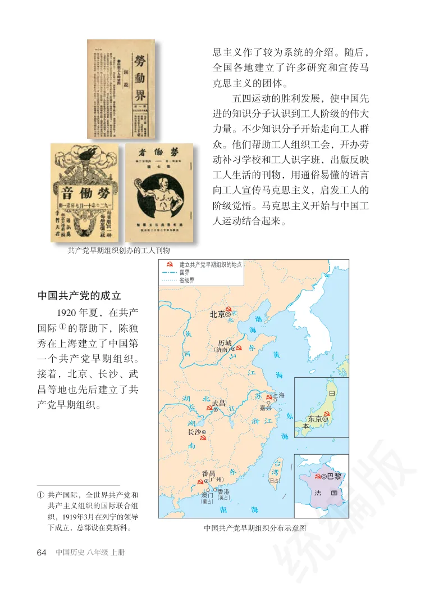
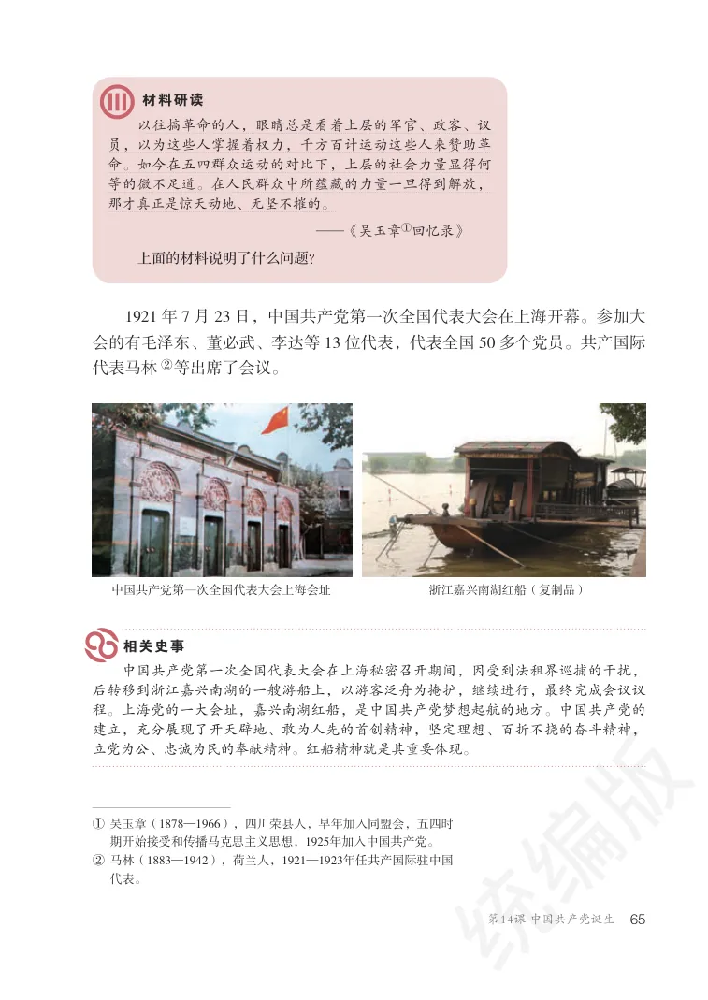
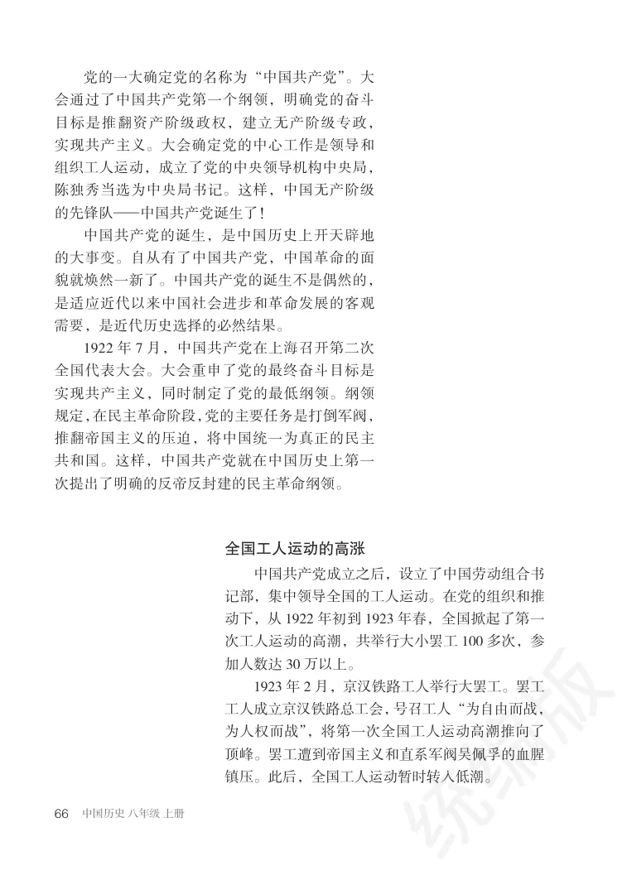
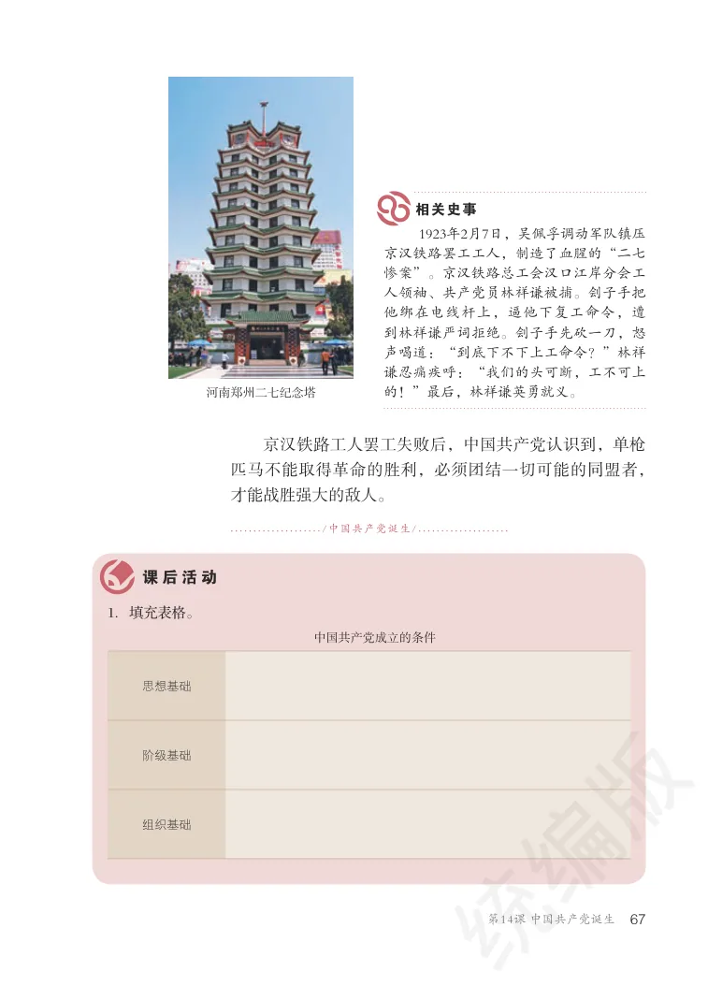
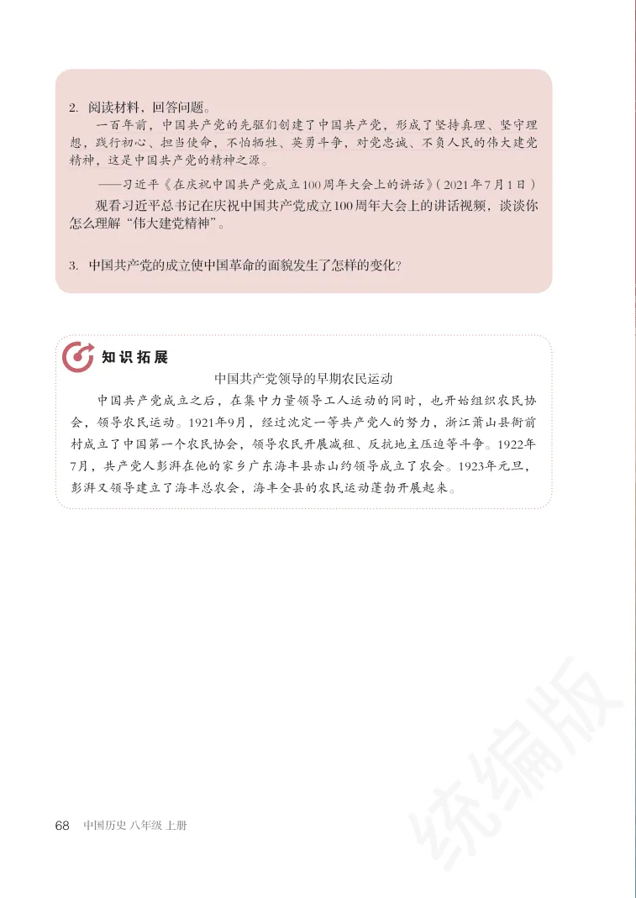
继续使用页眉中的“下一单元”进入后续内容。